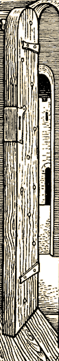

An Intro to StoryPlaying
StoryPlayers are the folks who enjoy playing in the Skotos online games. Welcome! We've created this community for you! Some of you may decide that you'd like to tell stories or create worlds, but we expect most of you will be happy right here – interacting with the fictional worlds that we've created.
The Skotos games are roleplaying experiences. That means you'll be taking on the roles of other people in other worlds. In Castle Marrach you might be a duelist with no memory of your past; in Galactic Emperor: Succession you might be an alien invertebrate attempting to gain rulership of the galaxy; in The Bane you might be a worshipper of the Sun god with uncertain loyalties. You'll get to explore new worlds and see them through different eyes.
Skotos plans to come out with a number of games over the next couple of years. They're divided into three broad categories:
Stages
These are the smallest and shortest games. They run for a limited amount of time (a night or a weekend or Friday evenings for a month) and they include a limited number of characters (8 or 20 or 100). Stages share many characteristics with their non-electronic kin: Live Action Roleplaying Games. You take on the role of a pregenerated character who has preexisting goals, virtues, flaws, and interconnections with other players. As the game goes on, you'll interact with lots of different players and try to accomplish those goals which you've determined are the most important.
Skotos' first Stage, Galactic Emperor: Succession, begins running on April 1, 2001. Every week you'll have a new opportunity to take over the galaxy.
Grand Theatres
These are our first long-term games. They take place in medium-sized locales, where the emphasis is on interaction and storytelling. Players choose their own characters, and introduce them into the games. Plots are constantly evolving, starting out small and building into long arcs. StoryTellers take the roles of major characters, to add to your enjoyment of the games.
Skotos' first Grand Theatre, Castle Marrach, has been running since September 2000. The complete Player's Guide is online. Create an account to begin playing right now!
Worlds
Like Grand Theatres, Worlds will be long-term games. However, while Grand Theatres emphasize interaction and storytelling, Worlds emphasize competition. Worlds are almost entirely computer moderated, with complex simulations underlying economies and ecologies. Worlds share some characteristics with their graphical kin – massively multiplayer roleplaying games – but will showcase larger and more complex worlds.
Skotos' first World, The Bane, will go online in late 2001.
Skotos Tech's games are available for free beta test until April 1, 2001. On April 1, the Skotos games will become pay-for-play. A basic subscription of $9.95 will allow access to all of the Skotos games, and the first month of play will be free.
Read more about becoming a StoryPlayer.